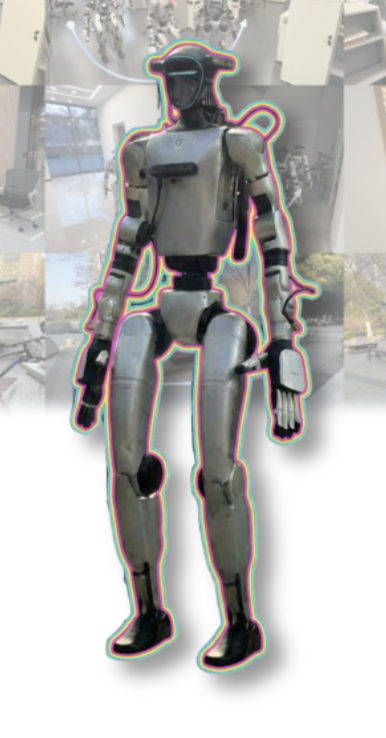
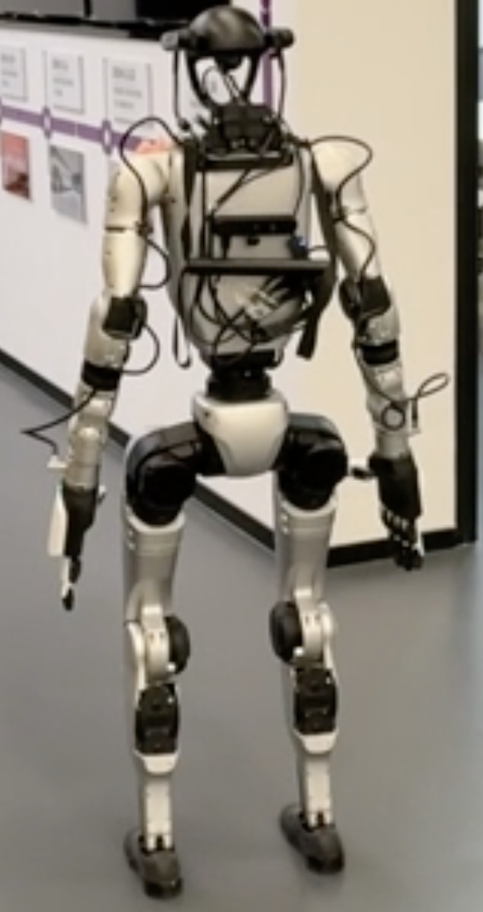

📷 360° Camera & Audio Hardware Evaluation
Overarching Goal: The Unitree G1 needs low-latency, robust spatial perception (Vision-Language-Action, VLA) to dynamically navigate and interact with its environment safely.
The 2026 Hardware Reality Check: The Unitree G1 uses a custom Jetson Orin NX carrier board with a locked-down BSP. You cannot directly connect GMSL2 cameras (like the ZED X One) without bricking the robot's OS. Furthermore, VLA models thrive on discrete perspective views rather than distorted 360° stitched panoramas.
Best Fit: PoE Ethernet Camera Networks. The G1 exposes a 1000Mbps RJ45 Ethernet port. Connecting Power-over-Ethernet (PoE) cameras (like RealSense D555 or OAK 4 D) via a small PoE switch allows high-speed native ROS 2 / DDS streaming without touching the locked internal motherboard.
| Device Setup | Interface to G1 | G1 BSP Compatibility | Latency / Sync | VLA Suitability |
|---|---|---|---|---|
| RealSense D555 ×4 / OAK 4 D ×2 (PoE) | PoE Switch → RJ45 | Native (DDS / ROS2 via Ethernet) | Near-Zero / Hardware Synced | Optimal (⭐⭐⭐⭐⭐) |
| Ricoh Theta X / Insta360 X5 | USB-C | Native (UVC / USB-C SDK) | Medium (~100-300ms) | Acceptable (⭐⭐⭐) |
| ZED X One S ×3 (GMSL2) | Requires external "Backpack" Jetson | Incompatible with internal board | Ultra-Low (internally), Bottlenecked to G1 | Heavy / Complex (⭐⭐) |
| KanDao / PANOCORE360 | USB-C | Native (Webcam) | High (3-5s delay) | Not Compatible (❌) |
📚 What the Literature Uses: Cameras in VLA Papers
| Paper / Project | Visual Reference | Camera Hardware | Primary Use Case | Mounting Strategy | Why They Chose It |
|---|---|---|---|---|---|
| Mobile ALOHA (Stanford, 2024) |
 |
4x Logitech C920 / RealSense D405 | Bimanual manipulation & navigation | Custom Mast & Wrists: 3D-printed brackets on the ViperX wrists, and a tall vertical aluminum extrusion mast mounted behind the robot for top-down views. | Multiple discrete perspective views (2x wrist, 1x top, 1x front) provide robust spatial coverage for the imitation learning model without the distortion of a single 360° lens. |
| VR Teleoperation Rigs (Various, e.g. TeleVision) |
(Varies by paper) | Insta360 X3 / Ricoh Theta / ZED | Immersive human-in-the-loop teleop | Head-Mounted: 3D-printed helmet or bracket bolted directly to the robot's head (or pan-tilt unit) to align precisely with human eye-level. | 180° or 360° cameras are mounted on the robot's head so a human wearing a VR headset can look around naturally to collect training data. Note: These 360° feeds are often used for human operators, while the VLA model runs on separate perspective cameras to avoid latency/distortion. |
| RT-1 / RT-2 (Google DeepMind, 2022-2023) |
 |
RealSense (Over-the-shoulder) + Base RGB | Generalist manipulation policies | Articulated Head: Integrated securely into the robot's articulated head (pan-tilt mechanism) looking over the shoulder and down at the workspace. | Prioritized standard, low-latency, un-distorted RGB perspective frames. The VLA architecture relies heavily on raw pixel-to-action mapping, making hardware sync and low latency much more critical than an ultra-wide field of view. |
| Open X-Embodiment / Any-Teleop (Multi-Institution, 2023) |
(Cross-embodiment dataset) | RealSense D435i (Third-person) + D405 (Wrist) | Cross-embodiment dataset collection | Tripod & Wrists: Typically a mix of 3D-printed wrist mounts and static heavy-duty tripods (or fixed extrusion masts) placed near the robot. | Standardized on Intel RealSense due to its plug-and-play ROS compatibility, reliable global shutter (crucial for moving arms without motion blur), and perfectly synced RGB-D frames. |
| Humanoid Robots (e.g., Figure, Optimus, Berkeley Humanoid) |
(Integrated Chassis) | Custom Stereo Arrays / RealSense / ZED | Full-body locomotion & dynamic manipulation | Head & Torso Integrated: Primary stereo/depth cameras are built directly into the head (for SLAM and target tracking). A secondary wide-angle or depth camera is often recessed into the chest/belly, angled downwards. | Humanoids cannot rely on external tripods or masts. The head provides human-like gaze tracking, while the chest camera is mandatory to see the hands and objects without the robot's own arms blocking the view. |
| Uni-LaViRA (2026) (arXiv:2605.27582 - May 2026) |
  |
4x Orbbec Gemini 336L RGB-D | Zero-shot Vision-Language Navigation (VLN) | 4-Camera Panoramic Ring: Mounted to provide Front, Left, Right, and Back views simultaneously. Creates a full 360° perspective field. | Bypasses the distortion of single 360° fisheye lenses by using 4 discrete perspective cameras. Allows the onboard MLLM to reason about the full surroundings instantly without forcing the robot to physically rotate to map the area. |
🥇 Tier 1: Best Fit (PoE Native Network)
RealSense D555 (x3-x4) OR OAK 4 D Wide (x2) + reSpeaker Flex XVF3800 Circular-4
Est. Budget: $1,500 - $2,500
The safest, highest-performance path. Use a small PoE switch to route discrete camera streams directly into the G1's Gigabit Ethernet port via native ROS 2 DDS. The reSpeaker Flex splits the mic from the DSP board, isolating it from the G1's loud head servos.
🥈 Tier 2: Single USB Puck (Simplest)
Ricoh Theta X OR Insta360 X5 + reSpeaker Flex XVF3800
Est. Budget: $900 - $1,100
If you just want a single cable plugged into the G1's external USB-C port, the Theta X (open source UVC driver) or Insta360 X5 are the only options. Latency is tolerable (~100-300ms), but you must reproject the equirectangular video on the GPU.
❌ Not Recommended (Backpack Jetson)
ZED X One S ×3 + ZED Box Orin NX (Backpack)
Est. Budget: $3,000+
While the cameras are incredible, GMSL2 cannot plug into the G1. You are forced to mount a second Jetson computer on the robot, adding 50W+ of power draw and requiring a custom 48V to 12V DC-DC converter from the G1 battery.